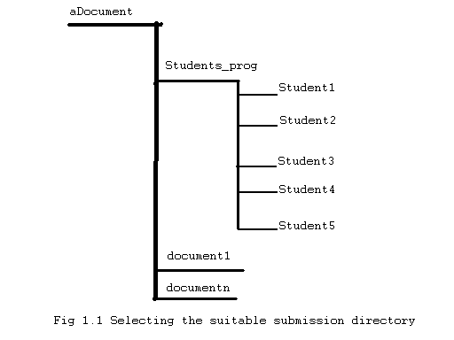
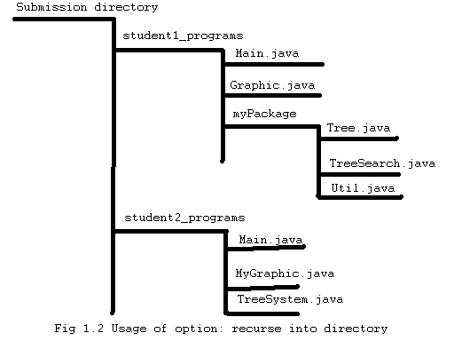

Description of JPlag general options.
The JPlag general options are the common and most used options and are
required. Some advanced options could also be required, but this
JPlag client will set those options to the default values.
The submission title is the name of your
submission. Here, submission means the set of files and directories
that will be send to the Jplag server to be compared to each oders
.Each element of this set of files is also named submision. In this
way, a JPlag submission is a set of directories and files also named
submissions that can be compared to each oders.
A submission title should not have any space betwenn characters.It will
be used by JPlag client as the name of the result directory.
In this way if your submission title is "assignment1" , the JPlag
result will be stored in /PATH/TO REPORT LOCATION /assignment1/
The submission directory is the
lowest level directory containing all files that will be submitted. In
the example in "figure 1.1 , if you
want to compare the programs of the students
student1, student2, student3, student4 and student5 wich are
respectively located in directories with the same name,
you must select the directory Student_prog as submission directory.
Setting aDocument as root directory would lead JPlag to compare the
documents: Student_prog , document1 and documentn.

One of the most important options.
Selecting a bad or unsuitable language lead JPlag to not or
unsuccessfully
parses files from submissions. Especially for the programming language
Java(TM),using of java15 is advisable because
some students can use java 1.4 syntax while anothers use java 5.0
syntax.
When selecting a language, corresponding default options for this
language are automatically setted.
The directory containing JPlag
results will be stored in the report directory.
This option allow JPlag to recurse into all
directories or (students) submissions. For the example below, if the
option recurse into directories is set to false, then the package
myPackage of the submission student1_programs will not be taken in
account.

Copyright © 1996-2005 Guido Malpohl
University of Karlsruhe.